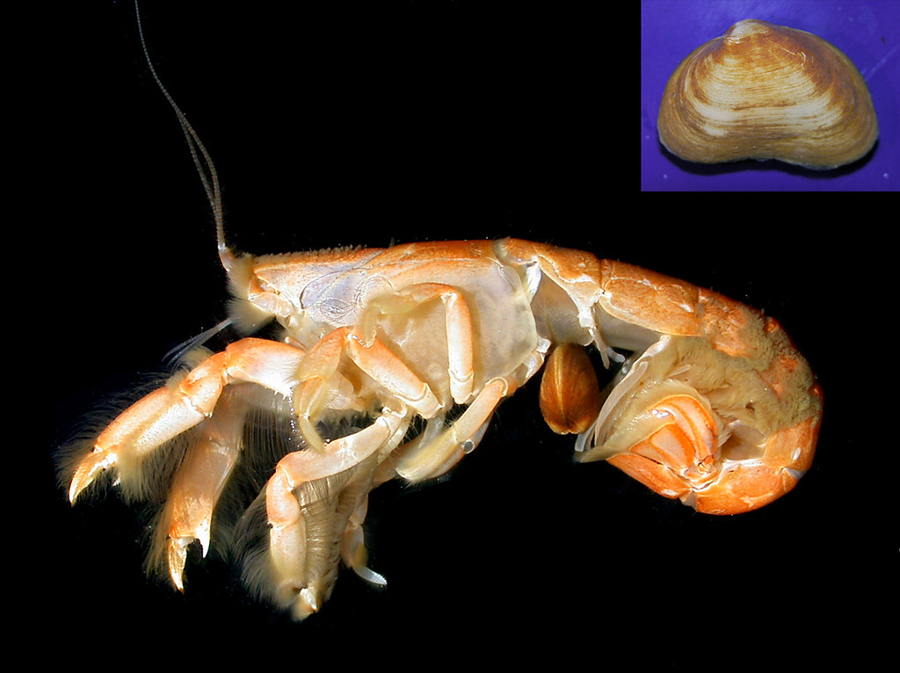
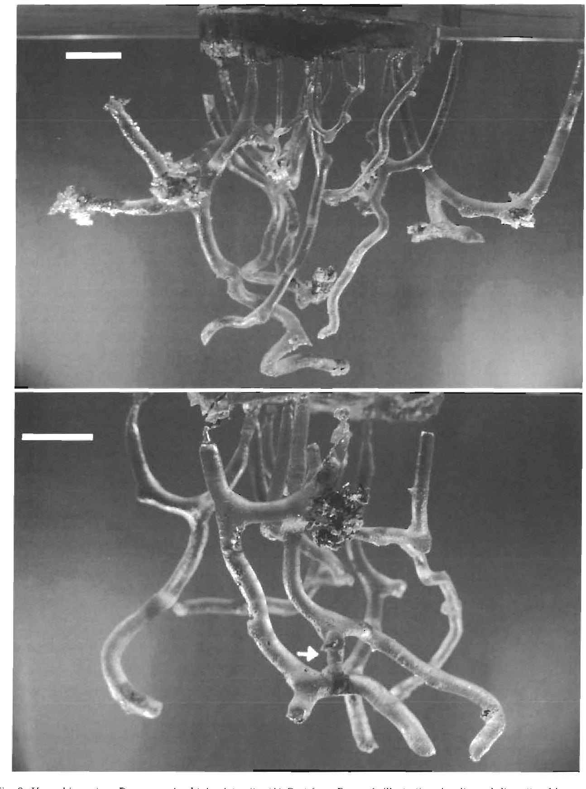
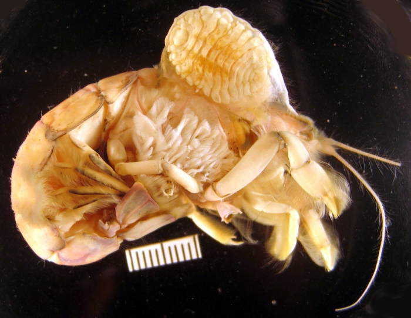
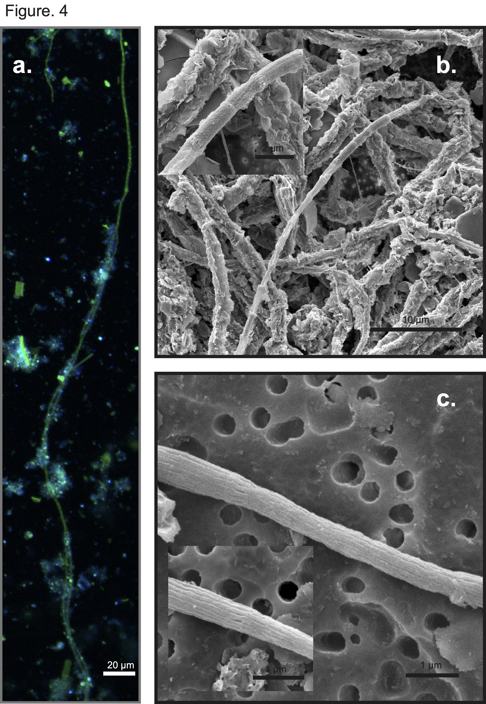

Exploring the unique role of Upogebia pugettensis in tidal sediment bioturbation and its impact on estuarine ecosystems.
Taxonomy and Classification
Upogebia pugettensis, commonly known as the Blue Mud Shrimp, belongs to the family Upogebiidae within the order Decapoda. Originally described as *Gebia pugettensis* in 1852, it was later reclassified under the genus *Upogebia*.
Phylum: Arthropoda
Class: Malacostraca
Order: Decapoda
Family: Upogebiidae
Morphology and Physical Characteristics
Upogebia pugettensis* can grow up to 100 mm in length, with northern populations typically larger than their southern counterparts. It has a light blue-green to deep olive-brown color, with a characteristic large, tridentate rostrum and short eyestalks. The body is divided into a cephalothorax and abdomen, with five pairs of thoracic appendages and three pairs of maxillipeds.

The North-West Pacific mudshrimp, Upogebia pugettensis, with a commensal clam, Pseudopythina (Orobitella) rugifera, attached beneath its abdomen
As a bioturbator, Upogebia pugettensis plays a critical role in aerating sediment and recycling nutrients in estuarine ecosystems. It constructs firm, permanent U- or Y-shaped burrows that are up to 46 cm deep, lined with mucus for stability. These burrows provide shelter for various commensal species and help facilitate nutrient exchange and decomposition processes in the sediment.

U. omissa. (a close relative to *U. pugettensis*) Burrow casts obtained in situ. (A) Cast from Frame 1, illustrating density and diversity of burrows. (B) Cast from Frame 2. Arrow indicates interconnection between 2 burrows. Scale bars = 5 cm
Upogebia pugettensis has been suggested to be a filter-feeding detritivore, drawing water into its burrow and trapping suspended particles using long setae on its pereopods. This filtering activity contributes to controlling phytoplankton density in estuarine waters. The species is known to exhibit ecosystem engineering behavior by affecting sediment composition, nutrient cycling, and community structure within its habitat.
Populations of Upogebia pugettensis have been impacted by the invasive parasitic isopod Orthione griffenis, introduced to the Pacific coast in the 1980s. This parasite attaches to the gills of the Blue Mud Shrimp, reducing its reproductive capacity and contributing to population declines. The loss of U. pugettensis can lead to changes in sediment stability and nutrient availability, impacting the broader estuarine ecosystem.

Coos Bay, Metcalf Marsh, Charleston, Oregon, USA, 43° 20’ 00.44’’ N, 124° 19’ 33.7’’ W, 26 June 2008 in branchial chamber (lifted) of Upogebia pugettensis. Coll. J. D. Williams; photo by J. D. Williams.
Research on Upogebia pugettensis Burrow Microbiome
Our research focuses on the unique microbial communities within the burrow linings of U. pugettensis. These burrows are Y-shaped structures that extend into anoxic zones of the sediment, creating a distinct microenvironment influenced by the shrimp's bioirrigation activities. Through these actions, the burrows act as conduits for oxygen, sustaining suboxic and oxic conditions even in otherwise anoxic sediments. This dynamic environment supports diverse microbial communities, including filamentous cable bacteria (CB), which play a role in electrogenic sulfur oxidation and other biogeochemical processes.
The primary goals of our research are:
Understanding Feeding Patterns: We examine the microbiome composition within burrow sediments to determine how Upogebia pugettensis sustains itself through filter-feeding and nutrient acquisition. Our studies have shown that bacterial biomass from these burrow linings likely constitutes a significant part of the shrimp's diet. The microbiome shared between the shrimp and its commensal bivalve, Neaeromya rugifera, indicates a symbiotic relationship and potential reliance on sediment bacteria for nourishment.
Unraveling Infection Chains: We investigate the parasitic infection by the bopyrid isopod Orthione griffenis, which has significantly impacted Upogebia pugettensis populations. Our research aims to explore how the microbial community within the shrimp's burrows influences its susceptibility to parasitic infections and to identify possible intervention points for managing this parasite's spread. By studying the microbial interactions and conditions within these burrows, we aim to gain insights that could aid in the conservation of this ecologically important crustacean species.
Fig. 6. (a) Venn diagram of the core microbiome across samples. A total of 181 amplicon sequence variants (ASVs) are shared by Upogebia, Neaeromya, and sediment. (b) Relative abundance of the core microbiome in each sample. (c) Differential heat tree illustrating the significant differences in abundance of each taxon within the core microbiome across Upogebia, Neaeromya, and sediment. Node sizes correspond to the number of ASVs observed within a given taxon. Colors represent the log fold difference of a given taxon’s median relative abundance. D0: Day 0; D40: Day 40;

Cable bacteria filaments extracted from sediment samples after 40 d of cultivation. (a) Filaments belonging to Desulfobulbaceae identified using Fluorescence in situ Hybridization (DSB 706 probe + Alexa Fluor 488, green and DAPI, blue). (b,c) Filaments of cable bacteria under SEM. Scale bar in Fig. 4a, 20 μm; scale bar in Fig. 4b, 10 μm (in Fig. 4b inset, 2 μm); scale bar in Fig. 4c, 1 μm (in Fig. 4c inset, 1 μm)